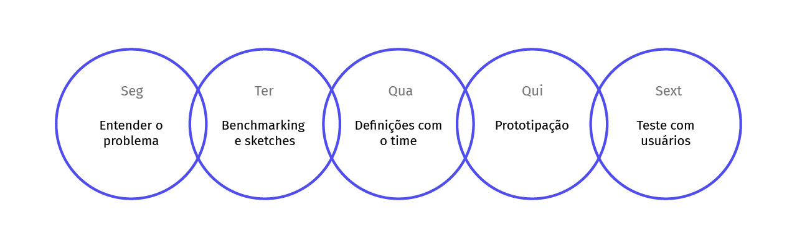

Hero - Gerenciador financeiro
Dando continuidade ao trabalho desenvolvido no projeto Hero - Marketplace, trabalhamos para criar um gerenciador financeiro fácil de usar e conectado às reais dificuldades das micro e pequenas empresas. Além disso o gerenciador deveria ter como um dos principais objetivos a entrega de documentos e informações necessárias aos contadores de forma correta, completa e no prazo
Meu papel
Pesquisas , concepção de produto, prototipagem, teste com usuários, visual design.
Introdução
O ponto partida foram os feedbacks levantados na validação da ideia do negócio. Além de mapear as dores e as necessidades dos usuários, conseguimos levantar as condições e hábitos de uso ao utilizar um gerenciador financeiro.
Objetivos
Ser fácil de usar
A interface deveria ser intuitiva e produtiva. O empreendedor não vai sacrificar muito do tempo dedicado ao seu negócio para usar o sistema.
Entregar valor
A interface deveria sempre responder uma demanda importante de forma objetiva. Nada de informações ou funcionalidades sem propósito.
Ter conformidade legal
A interface deveria abarcar as regras do universo contábil e enviar as informações financeiras para os contadores de forma correta, completa e no prazo.
Design process
Visando um processo que proporcionasse a concepção de um produto focado em resolver problemas e ainda se encaixasse em modelo de desenvolvimento ágil, implementei as etapas de um design sprint em uma rotina semanal.

{kind=link}
{kind=link}
{kind=link}
{kind=link}
{kind=link}
Features
Linha do tempo
Para atingir o objetivo de ser fácil de usar, estruturei a interface financeira em uma linha do tempo. Nossas personas já tinham experiência em interagir com esse formato, já que os aplicativos de suas contas bancárias utilizavam da mesma proposta - Isso fez com que a interface se mostrasse bastante intuitiva, com uma curva de aprendizagem baixa
Recorrência e checagem rápida
Produtividade era importante, então implementamos a funcionalidade de recorrência, que permite que o empreendedor cadastre transações que ocorrem todo mês ou são divididas em parcelas. Também desenhei uma forma de checagem rápida onde o usuário pode marcar como pago/recebido uma transação com apenas um click.

Alertas e diálogos
Nada de gráficos elaborados ou análises financeiras complexas, o que o micro e pequeno empreendedor mais quer é ficar em dia com seus pagamentos e recebimentos. Para ajudar esse empreendedor, projetamos na linha do tempo uma estrutura que prioriza o pagamento de contas atrasadas. Além disso desenhamos um fluxo conversacional que direciona o empreendedor a realizar suas tarefas diárias no gerenciador financeiro.
Conciliação bancária
O maior desafio era pensar uma funcionalidade que ajudasse o empreendedor a fazer sua conciliação bancária - tarefa até então sempre feita pelo contador. Projetei um modelo de match, onde o sistema indica a transação cadastrada com a maior probabilidade de ser espelho do lançamento bancário. Toda a experiência foi pensada para concentrar o empreendedor a resolver uma conciliação por vez, a fim de garantir a assertividade das informações, algo imprescindível para o contador.